Este documento recorre el circuito completo bloque por bloque: qué hace, qué valores tiene cada componente, cómo se calculó y qué resultó en la simulación. Los números marcados como simulación salen de LTspice con el motor supuesto descrito al final; no son mediciones de la máquina armada.
Hay once bloques. Cada uno es una hoja (BLOQUE_*.asc) y el esquemático SISTEMA_COMPLETO.asc los une por nombre de nodo. Los nodos que se repiten en todo el circuito son:
| Nodo | Qué es |
|---|---|
vm | 12 V después del diodo de protección (alimenta motor, op-amps y buzzer) |
v5 | 5 V regulados (lógica, comparadores, sensores) |
0 | tierra |
| Bloque | Entradas | Salidas |
|---|---|---|
| 1 Regulador 5 V | vm | v5 |
| 2 Sensor IR | v5, b (fototransistor) | p (objeto), tin (punto de prueba) |
| 3 Sobrecorriente | vm, v5, sh (shunt) | setn (falla, activa en bajo) |
| 4 Temperatura | v5, tnode (NTC) | setn |
| 5 Lógica | v5, ein, gin, rin, p, setn | m, n, l, f, fn |
| 6 Generador PWM | v5, vctrl | pwm |
| 7 Potencia | v5, vm, pwm, m | dm (motor), sh (shunt) |
| 8 Encoder y F-V | v5, enc | vspd |
| 9 Referencia de velocidad | v5, l | vref |
| 10 Amplificador de error | vm, v5, vref, vspd | vctrl |
| 11 Alarma | vm, f | buzzer |
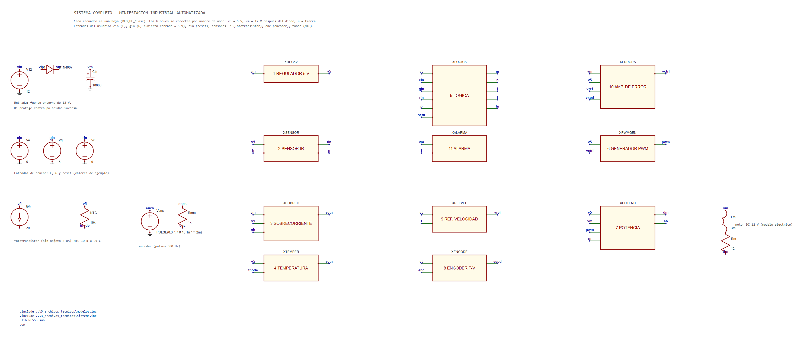
Las variables del enunciado son E (habilitar), G (cubierta cerrada), P (objeto) y F (falla). Las salidas son M (permiso de motor), N (velocidad normal), L (velocidad reducida) y A (alarma).
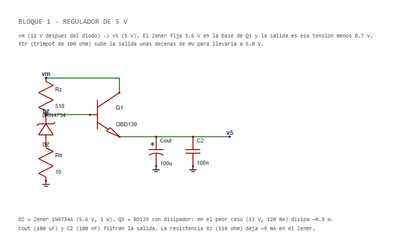
Qué hace. Convierte los 12 V en 5 V. El Zener de 5.6 V fija la base del BD139 y la salida queda un poco menos de 0.7 V por debajo: unos 4.9 V. El BD139 entrega la corriente porque el Zener solo no aguanta.
| Componente | Valor | Para qué |
|---|---|---|
| Rz | 510 Ω | Polariza el Zener: (11 − 5.6) / 510 ≈ 10 mA |
| DZ | 1N4734A (5.6 V) | Referencia |
| Rtr | trimpot 100 Ω (se ajusta cerca de 10 Ω) | Sube la salida unas decenas de mV para llegar a 5.0 V |
| Q1 | BD139 con disipador | Transistor de paso |
| Cout, C2 | 100 µF, 100 nF | Filtro de la salida (el + del electrolítico va a v5) |
Simulación. Con Vin de 11 a 13 V, carga de 30 a 120 mA y hFE de 40 a 250: 4.84 a 4.95 V con el Zener exacto (cumple 5 V ± 5 %). Con un Zener 5 % bajo y sin ajuste da 4.56 a 4.68 V (no cumple); con el trimpot entre 38 y 45 Ω da 4.79 a 5.23 V. Peor caso del BD139 (13 V, 120 mA): 0.85 a 0.92 W, por eso lleva disipador. En el sistema completo con motor: v5 = 5.012 a 5.018 V.
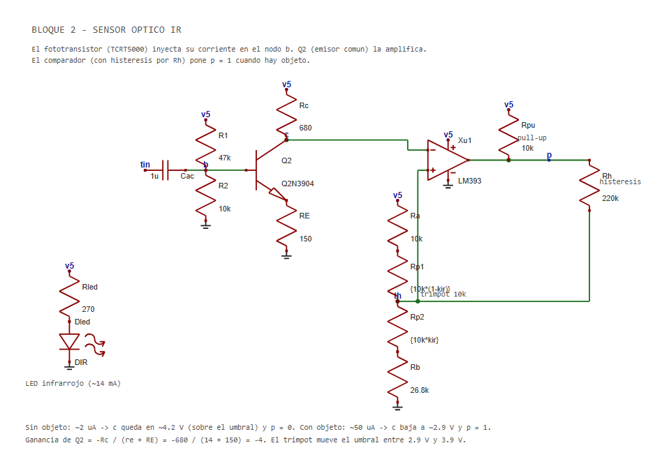
Qué hace. Un LED infrarrojo ilumina y un fototransistor (TCRT5000) recibe el reflejo del objeto. Su corriente entra a la base del 2N3904 en emisor común, que la amplifica; un LM393 con histéresis la convierte en 0 o 1.
| Componente | Valor | Para qué |
|---|---|---|
| Rled | 270 Ω | (5 − 1.2) / 270 ≈ 14 mA en el LED IR |
| R1, R2 | 47 kΩ, 10 kΩ | Polarización de la base (Vb ≈ 0.82 V) |
| Q2 | 2N3904 | Emisor común |
| Rc, RE | 680 Ω, 150 Ω | Colector y emisor (sin puentear): ganancia ≈ Rc / RE |
| Umbral | Ra 10 kΩ + trimpot 10 kΩ + Rb 26.8 kΩ | Ajuste del punto de decisión |
| Rpu, Rh | 10 kΩ, 220 kΩ | Pull-up del comparador e histéresis |
| Cac | 1 µF | Acople para el punto de prueba tin |
Simulación (hFE 100 / 200 / 400; el fototransistor se modela como fuente de corriente: 2 µA sin objeto y 50 µA con objeto):
| Caso | Voltaje de colector | p |
|---|---|---|
| Sin objeto | 4.30 / 4.17 / 4.08 V | 0.03 V |
| Con objeto | 3.22 / 2.86 / 2.61 V | 4.93 V |
Los umbrales del comparador son 3.30 V (baja) y 3.52 V (sube). Ganancia de pequeña señal −3.95 (11.9 dB), Zin ≈ 6.7 kΩ y Zout ≈ 680 Ω. El bloque consume unos 15.5 mA de 5 V.
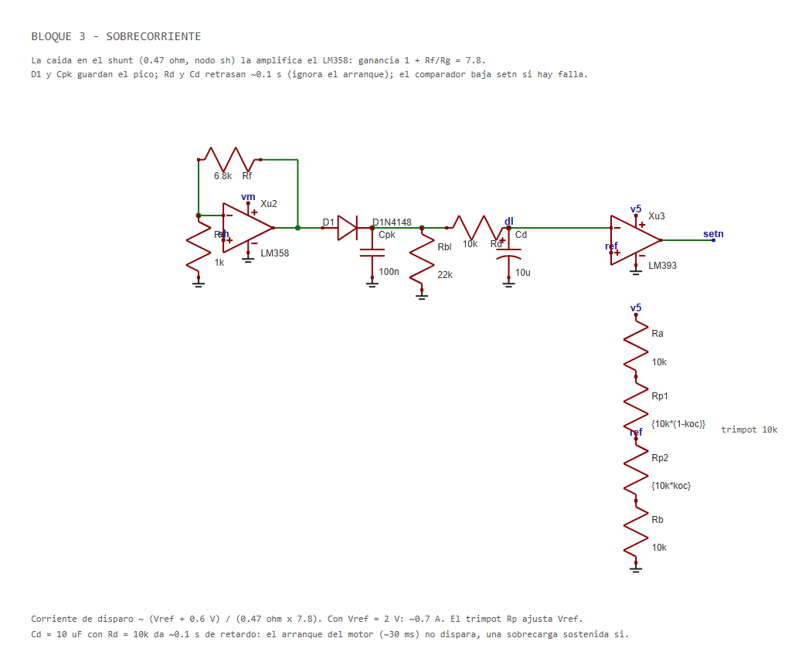
Qué hace. La corriente del motor pasa por un shunt de 0.5 Ω (5 W) (en el bloque de potencia). Un LM358 amplifica la caída con ganancia 1 + 6.8k/1k = 7.8. Un diodo con capacitor guarda el pico, un RC de unos 0.1 s retrasa la decisión para que el arranque no dispare la falla, y un LM393 compara con una referencia ajustable.
| Componente | Valor |
|---|---|
| Rg, Rf | 1 kΩ, 6.8 kΩ |
| D1, Cpk, Rbl | 1N4148, 100 nF, 22 kΩ (detector de picos) |
| Rd, Cd | 10 kΩ, 10 µF (retardo ≈ 0.1 s; + de Cd hacia dl) |
| Referencia | Ra 10 kΩ + trimpot 10 kΩ + Rb 10 kΩ → Vref ≈ 2 V |
Corriente de disparo ≈ (Vref + 0.6 V) / (0.5 Ω × 7.8) ≈ 0.67 A.
Simulación. Dispara a ≈ 0.71 A. Un arranque de 1.5 A durante 30 ms deja el nodo dl en 1.11 V como máximo (no dispara). 0.55 A sostenidos no disparan (1.47 V). 0.9 A sostenidos disparan a los 56 ms. En el sistema completo, con carga extra desde 1.9 s, dispara en t = 2.098 s.
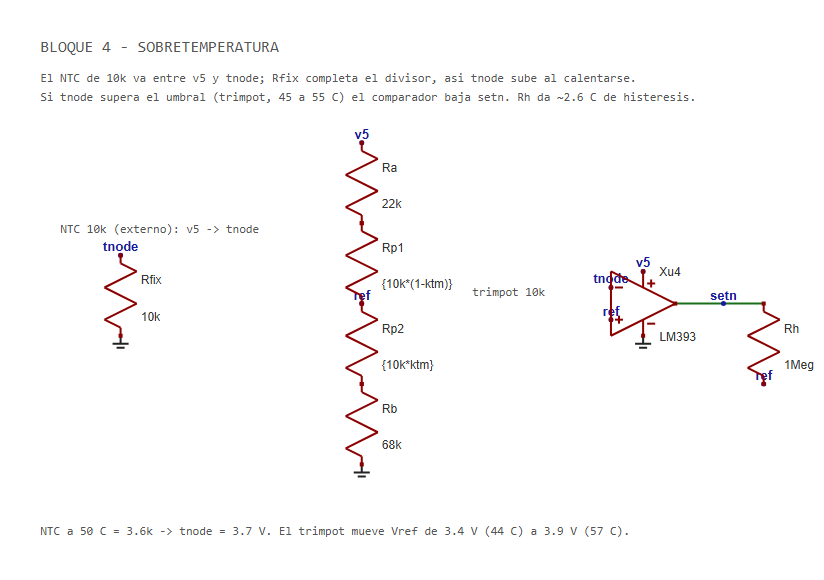
Qué hace. El NTC de 10 kΩ (B = 3950) va de v5 a tnode y una resistencia fija de 10 kΩ lo completa a tierra. Al calentarse el NTC baja de resistencia y tnode sube. Un LM393 compara con un umbral ajustable.
Cálculo a 50 °C: R(NTC) = 10 kΩ · e3950 (1/323.15 − 1/298.15) ≈ 3.6 kΩ, entonces tnode = 5 · 10 / (10 + 3.6) ≈ 3.7 V.
| Componente | Valor |
|---|---|
| Rfix | 10 kΩ |
| Umbral | Ra 22 kΩ + trimpot 10 kΩ + Rb 68 kΩ |
| Rh | 1 MΩ (histéresis) |
Simulación. El umbral se ajusta de 44.0 a 56.8 °C con el trimpot (centro 49.9 °C); histéresis de 2.5 a 2.7 °C. En el sistema completo disparó a 49.9 °C.
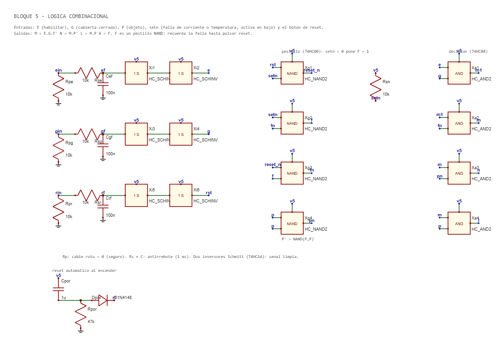
Ecuaciones. M = E · G · F', N = M · P', L = M · P, A = F. F sale de un pestillo hecho con compuertas NAND (74HC00): cuando setn baja (falla de corriente o temperatura), F se pone en 1 y se queda hasta pulsar reset. El reset solo limpia si la falla ya desapareció. Al encender hay un reset automático (Cpor 1 µF + Rpor 47 kΩ + Dpor).
| Parte | Detalle |
|---|---|
| Entradas E, G, reset | Rp 10 kΩ a tierra (un cable roto cuenta como 0), Rs 10 kΩ + 100 nF (antirrebote ≈ 1 ms) y dos inversores Schmitt 74HC14 |
| Pestillo | 74HC00: reset_n = NAND(rst, setn); P' = NAND(P, P) |
| Salidas | 74HC08: M1 = E·G, M = M1·F', N = M·P', L = M·P |
| setn | Pull-up de 10 kΩ; es un AND cableado de los comparadores de corriente y temperatura (colector abierto) |
Simulación. Las 16 combinaciones de E, G, P y F se probaron con el circuito real (pestillo, reset y Schmitt incluidos): todas correctas. El reset solo limpia cuando ya no hay falla.
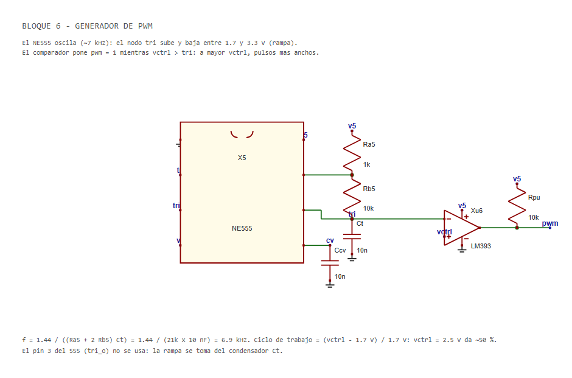
Qué hace. Un NE555 astable hace una rampa en su capacitor (entre 1.7 y 3.3 V). Un LM393 compara vctrl con la rampa: a mayor vctrl, pulsos más anchos.
f = 1.44 / ((Ra + 2 Rb) · Ct) = 1.44 / (21 kΩ · 10 nF) ≈ 6.9 kHz. Ciclo de trabajo = (vctrl − 1.7 V) / 1.7 V.
Simulación. Con vctrl = 2.4 V el ciclo fue 0.44 (teórico (2.4 − 1.67) / 1.67 = 0.44).
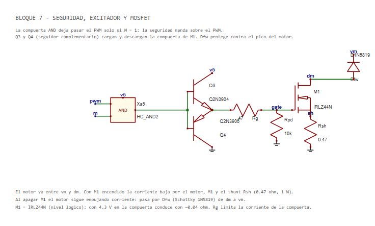
Qué hace. Una AND 74HC08 deja pasar el PWM solo si M = 1. Un seguidor complementario (2N3904 / 2N3906) alimentado con 5 V mueve la compuerta del MOSFET IRFZ44N (con 4.4 V en la compuerta ya conduce con poca resistencia). El diodo 1N5819 absorbe los picos del motor al apagar. El shunt de 0.5 Ω (5 W) va entre la fuente del MOSFET y tierra.
Se eligió un MOSFET de nivel lógico y un excitador de 5 V a propósito: si falla el 5 V, el MOSFET queda apagado. Con un IRF540N o IRFZ44N se necesitaría un excitador de 12 V.
Simulación. Compuerta de 0 a 4.36 V, Vds máximo 11.5 V.
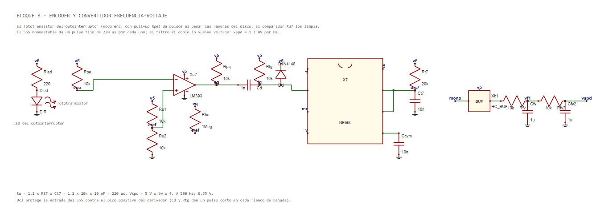
Qué hace. El optointerruptor da pulsos al pasar las 20 ranuras del disco. Un LM393 limpia la señal, un derivador (1 nF + 10 kΩ) crea un pulso corto en cada flanco y un 555 monoestable lo convierte en un pulso fijo. Un filtro RC doble (10 kΩ + 1 µF, dos veces) lo vuelve voltaje.
Ancho del pulso: tw = 1.1 · Rt7 · Ct7 = 1.1 · 20 kΩ · 10 nF = 220 µs. Vspd = 5 V · 220 µs · f = 1.1 mV por Hz. A 500 Hz: 0.55 V.
Simulación. 100 Hz → 0.119 V; 500 Hz → 0.557 V; 1 kHz → 1.106 V. Rizado de 14 a 26 mV pico a pico.
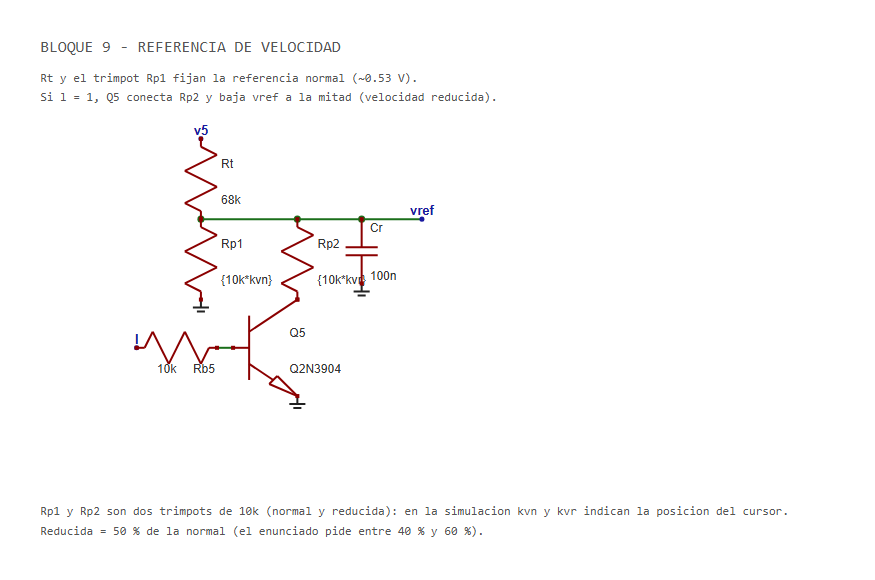
Qué hace. Rt (68 kΩ) y un trimpot de 10 kΩ dan la referencia normal, unos 0.53 V. Cuando L = 1, el 2N3904 pone un segundo trimpot en paralelo y la referencia baja a cerca de la mitad (el enunciado pide entre 40 % y 60 %).
Simulación. Referencia normal 0.526 V; velocidad reducida = 56 % de la normal.
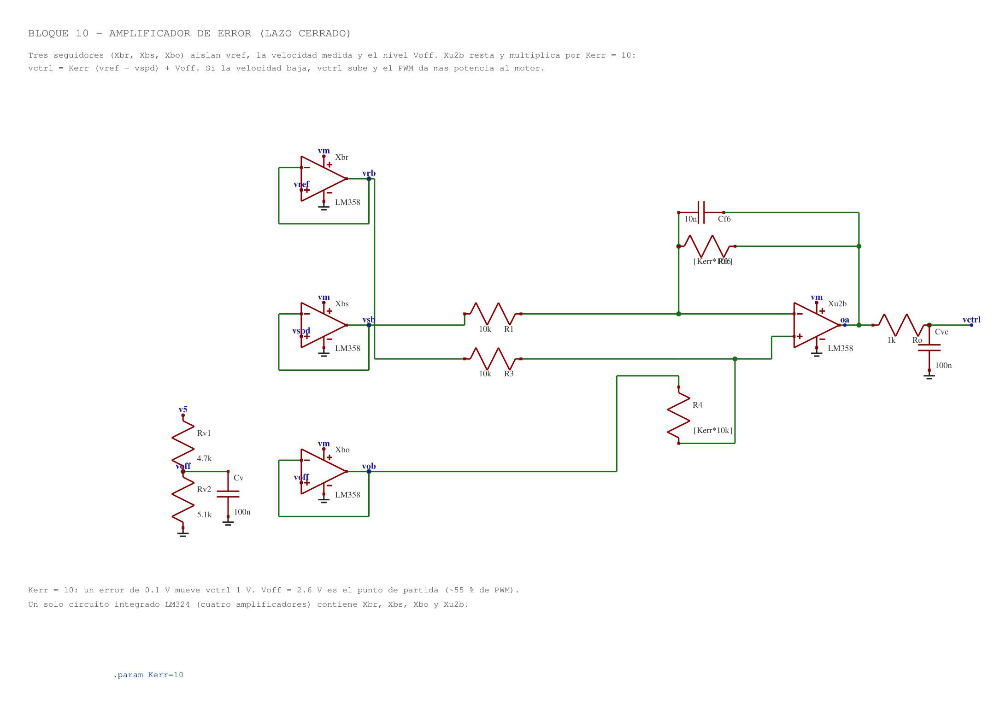
Qué hace. Tres seguidores aíslan vref, vspd y un nivel de partida; el cuarto amplificador del LM324 resta y multiplica: vctrl = Kerr · (vref − vspd) + Voff con Kerr = 10 (100 kΩ / 10 kΩ) y Voff = 5 · 5.1 / (4.7 + 5.1) ≈ 2.6 V. Si la velocidad baja, vctrl sube y el PWM da más potencia. No tiene integrador, así que no hay acumulación de error (windup).
Simulación (motor supuesto): normal 147 rad/s (1403 rpm) con error de 2 % respecto a la referencia; reducida 82.4 rad/s (786 rpm). Con carga extra la velocidad baja 6.5 % en lazo cerrado contra 25.9 % en lazo abierto. Arranque al 95 % en 0.08 s con sobreimpulso de 18 % y corriente de arranque de 0.88 A.
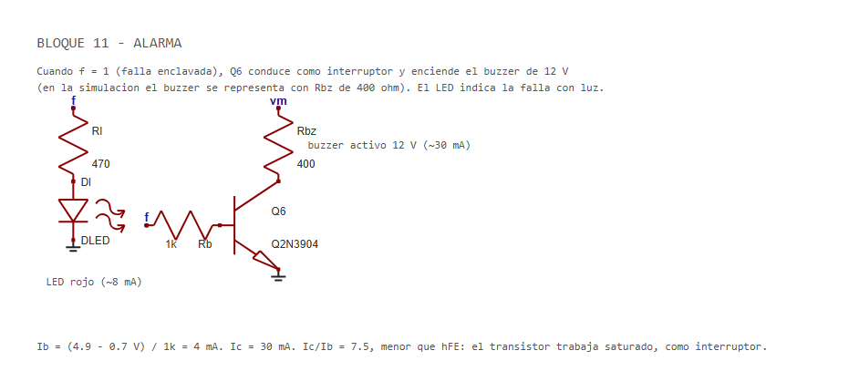
Qué hace. Cuando f = 1, el 2N3904 conduce como interruptor y enciende el buzzer de 12 V. Ib = (4.9 − 0.7) / 1 kΩ ≈ 4 mA; Ic ≈ 30 mA; Ic/Ib = 7.5, menor que hFE, así que el transistor satura. En la simulación el buzzer se representa con 400 Ω. La señal luminosa es un LED rojo con 470 Ω desde f (≈ 8 mA); las simulaciones largas del sistema se corrieron antes de agregarlo.
| Situación | Resultado simulado |
|---|---|
| Normal | 1394 rpm, corriente del motor 0.150 A |
| Objeto presente | L = 1, N = 0, 789 rpm |
| Objeto retirado | 1415 rpm |
| Cubierta abierta (t = 1.40 s) | M cae en 1.4010 s, motor a 0 A |
| Cubierta cerrada | Reanuda a 1392 rpm |
| Falla de corriente | f = 1 (alarma 4.8 V), M = 0, motor parado; la falla sigue después de quitar la carga |
| Reset a 2.6 s | Limpia la falla, 1409 rpm |
| Falla de temperatura | Dispara a 49.9 °C |
| Reset con calor (pulsado de 3.40 a 3.55 s) | No limpia: el NTC estaba a 53 a 54 °C, setn seguía en bajo y f se mantuvo en 1 (4.82 V). La falla sigue enclavada aunque después se enfríe (f = 1 a los 3.75 y 4.15 s). Un nuevo reset a 4.20 s, con 25 °C, limpia (f = 0, 1411 rpm a 4.50 s) |
Fuente y regulador en todo el recorrido: v5 entre 5.012 y 5.018 V, vm mínimo 11.13 V y corriente máxima por el diodo de entrada 0.95 A.
modelos.inc); no son los modelos del fabricante.